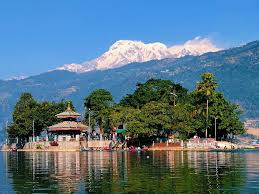

Pokhara, the city of lakes, is the second-largest city of Nepal after Kathmandu. Three 8,000-metre (26,000-foot) peaks (Dhaulagiri, Annapurna, Manaslu) can be seen from the city. The Machhapuchchhre (Fishtail) with an elevation of 6,993 metres (22,943 feet) is the closest to the city.
